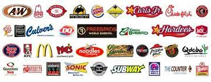

Food industrialization is the increasing intensification and capitalization of the production, transport, storage, and retailing of foods, especially of 'Westernized' products, associated with agribusiness and transnational corporations.
A focus on producing more food than quality food that is better for you is affecting public health. Obesity rates in many countries are rapidly increasing as access to fast food continues to increase. In all of the counties below each has shown an increased obesity rate ranging between 5.1%-67.7% over the last ten years.

With this rate of obesity rapidly increasing, it will lower the life expectancy in many countries and decrease the overall health of the nation. Fast food is often an option to most people because it is affordable and easy to access, but it causes many issues that will result in poor health in the future. Eating healthy is less affordable than getting fast food, but it is worth it. We are what we eat, so we must be conscious of what we are consuming.